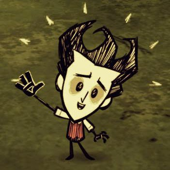
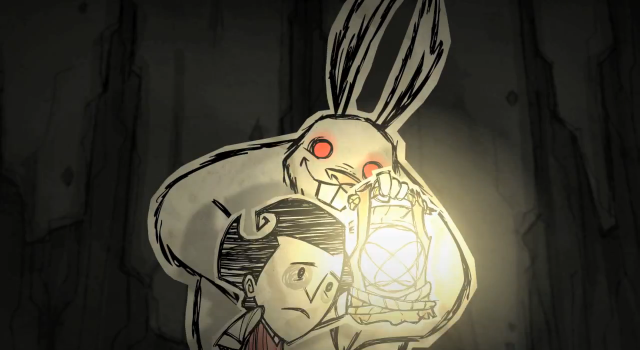

What is Don't Starve?
Don't Starve is a action-adventure video game with survival and rogue-like aspect, developed by Klei Entertainment. The game follows a scientist named Wilson who finds himself in a dark, dreary world and must survive as long as possible. Toward this end, the player must keep Wilson healthy, fed, and mentally stable as he avoids a variety of surreal and supernatural enemies that will try to kill and devour him. The "Adventure" mode adds depth to the sparse plot and pits Wilson against the game's antagonist, Maxwell.
 